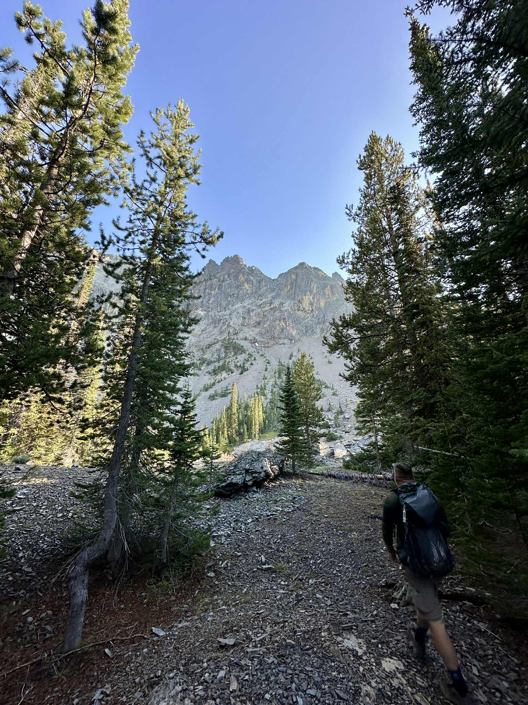

Hello! I'm Jason Lamb, a Full Stack Engineer with a story forged in resilience and a diverse skill set built from the ground up. Growing up in an underprivileged home in Eastern Oregon, I learned early on that if you want something, you build it yourself. That mindset has been the foundation of my entire career, from bootstrapping my skills to running my own IT consulting business.
My professional journey is unique, bridging the gap between the digital and the physical. With over 20 years in IT, my expertise lies in software development and systems integration, but my hands-on experience runs deeper—I’m also a skilled welder and fabricator. This blend of disciplines, from shaping steel to architecting code, gives me a grounded, systems-level perspective that few can claim.
 This practical foundation is backed by key certifications in both information technology (CompTIA Network+, Azure AZ-900) and public works (Hazmat Technician, Oregon DEQ). It has enabled me to lead technical teams, implement agile frameworks, and ensure the reliability of critical systems with meticulous attention to detail.
My passion for building extends beyond my career into hobbies like CNC machining and vehicle modification. When I'm not engineering a solution, I'm likely backpacking, traveling, and capturing the world through a camera lens—a constant reminder of how far a journey of self-reliance can take you.